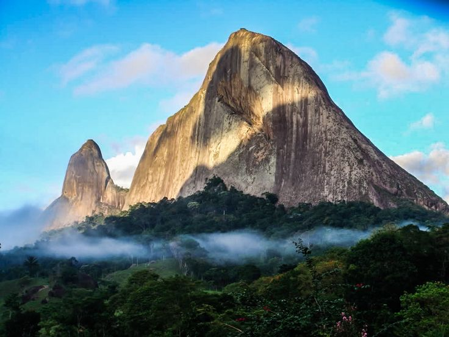

A Grandiosidade das Montanhas Brasileiras
O Brasil, embora mais conhecido por suas praias paradisíacas, abriga um impressionante conjunto de formações montanhosas que encantam visitantes de todo o mundo. Distribuídas por diversas regiões do país, nossas montanhas oferecem não apenas paisagens deslumbrantes, mas também experiências únicas de contato com a natureza, oportunidades para esportes de aventura e momentos de profunda contemplação.
As montanhas brasileiras são testemunhas silenciosas da história geológica do nosso planeta, com formações que datam de milhões de anos. Cada cadeia montanhosa possui características próprias, seja pela composição rochosa, pela vegetação que a recobre ou pelos fenômenos climáticos que nela ocorrem. Esta diversidade proporciona aos viajantes a possibilidade de vivenciar diferentes cenários e desafios a cada nova exploração.
Nesta seção do Mundo Viajante, convidamos você a conhecer algumas das mais impressionantes montanhas do Brasil, suas peculiaridades, as melhores épocas para visitá-las e dicas práticas para aproveitar ao máximo cada destino. Prepare-se para uma jornada pelas alturas, onde o ar puro, as vistas panorâmicas e a sensação de liberdade criam memórias inesquecíveis.
Serra do Mar: A Muralha Verde do Brasil
A Serra do Mar é uma impressionante cadeia montanhosa que se estende por aproximadamente 1.500 km ao longo da costa brasileira, do Espírito Santo até o norte de Santa Catarina. Esta formação geológica, que data de cerca de 60 milhões de anos, funciona como uma verdadeira muralha natural entre o litoral e o planalto interior, criando paisagens de extraordinária beleza.
Coberta por um dos mais importantes remanescentes de Mata Atlântica do país, a Serra do Mar abriga uma biodiversidade surpreendente, com milhares de espécies de plantas e animais, muitas delas endêmicas e ameaçadas de extinção. A densa vegetação que recobre suas encostas contrasta com os afloramentos rochosos, criando um mosaico visual de rara beleza, especialmente quando observado do alto de seus picos.
No estado de São Paulo, o Parque Estadual da Serra do Mar protege uma significativa porção desta cadeia montanhosa, oferecendo aos visitantes diversas trilhas e mirantes. O Pico do Corcovado, em Ubatuba, com seus 1.150 metros de altitude, proporciona uma vista panorâmica que abrange desde o litoral norte paulista até Paraty, no Rio de Janeiro. A trilha que leva ao cume é considerada de dificuldade moderada a alta, recompensando os aventureiros com paisagens de tirar o fôlego.
Já no Rio de Janeiro, a Serra dos Órgãos, parte da Serra do Mar, apresenta algumas das formações rochosas mais impressionantes do Brasil. O Dedo de Deus, com seus 1.692 metros, é um símbolo do montanhismo nacional, enquanto o Pico da Pedra do Sino, ponto culminante do parque com 2.275 metros, oferece aos visitantes a experiência única de acampar nas alturas, com vista para o nascer do sol sobre o oceano Atlântico.
Serra da Mantiqueira: O Encontro das Montanhas com o Céu
A Serra da Mantiqueira, cujo nome de origem indígena significa "montanha que chora", devido às inúmeras nascentes que brotam de suas encostas, estende-se pelos estados de São Paulo, Minas Gerais e Rio de Janeiro. Esta imponente cadeia montanhosa abriga o Pico das Agulhas Negras, com 2.791 metros, e o Pico da Pedra da Mina, com 2.798 metros, duas das maiores elevações do Brasil.
O Parque Nacional do Itatiaia, primeiro parque nacional brasileiro, criado em 1937, protege parte da Serra da Mantiqueira e oferece aos visitantes a oportunidade de explorar um ambiente único, onde a vegetação de altitude, com seus campos de altitude e florestas nebulares, cria cenários quase místicos, especialmente quando envolvidos pela neblina matinal.
A região é conhecida por suas baixas temperaturas, sendo um dos poucos lugares do Brasil onde ocorre neve ocasionalmente. Durante o inverno, as madrugadas podem registrar temperaturas negativas, criando um fenômeno conhecido como "geada negra", quando a vegetação fica coberta por uma fina camada de gelo. Esta característica climática torna a Serra da Mantiqueira um destino peculiar em um país predominantemente tropical.
Além das belezas naturais, a Serra da Mantiqueira é famosa por suas estâncias climáticas, como Campos do Jordão (SP), Monte Verde (MG) e Visconde de Mauá (RJ). Estes charmosos destinos combinam o contato com a natureza a uma rica oferta gastronômica e cultural, com influência europeia que se reflete na arquitetura, na culinária e nas tradições locais.
Chapada Diamantina: O Tesouro da Bahia
No coração do estado da Bahia, a Chapada Diamantina emerge como um verdadeiro paraíso para os amantes de montanhas, cachoeiras e cavernas. Esta formação geológica, parte da Cadeia do Espinhaço, foi palco de intensa atividade mineradora no século XIX, quando a descoberta de diamantes atraiu aventureiros de todo o país. Hoje, preservada como parque nacional, a região encanta visitantes com suas paisagens surreais e rica biodiversidade.
O Pico do Barbado, com 2.033 metros de altitude, é o ponto culminante da Chapada Diamantina e da região Nordeste do Brasil. A trilha que leva ao seu cume atravessa diferentes ecossistemas, desde a caatinga nas áreas mais baixas até os campos rupestres nas altitudes elevadas, proporcionando aos caminhantes uma verdadeira aula de geografia e botânica a céu aberto.
Outro destaque da região é o Morro do Pai Inácio, com 1.120 metros, cuja forma de mesa e localização estratégica oferecem uma vista panorâmica de 360 graus da chapada. O nascer e o pôr do sol vistos deste mirante natural são experiências inesquecíveis, com o céu tingindo-se de cores vibrantes que contrastam com o verde da vegetação e o cinza das formações rochosas.
A Chapada Diamantina é também famosa por suas inúmeras cachoeiras, como a Cachoeira da Fumaça, com queda livre de 380 metros, uma das mais altas do Brasil. Em dias de vento forte, a água que despenca do alto se transforma em névoa antes mesmo de atingir o solo, criando o efeito visual que deu nome à cachoeira. O Vale do Pati, considerado por muitos como o trekking mais bonito do Brasil, oferece aos aventureiros a oportunidade de caminhar por dias entre montanhas, rios cristalinos e comunidades tradicionais que preservam um modo de vida centenário.
Serra da Canastra: O Berço das Águas
Localizada no sudoeste de Minas Gerais, a Serra da Canastra é conhecida como o "berço das águas" por abrigar as nascentes de importantes rios brasileiros, incluindo o majestoso Rio São Francisco. O Parque Nacional da Serra da Canastra protege uma área de cerca de 200 mil hectares, onde os campos de altitude se estendem a perder de vista, criando paisagens de rara beleza.
A região é caracterizada por suas formações rochosas em formato de mesa, que lembram uma canastra (baú antigo), origem do nome da serra. O ponto culminante é a Serra Brava, com aproximadamente 1.496 metros de altitude, de onde se tem uma vista privilegiada dos campos que se estendem até o horizonte, pontilhados por cachoeiras e córregos de águas cristalinas.
A Cachoeira Casca D'Anta, formada pelo jovem Rio São Francisco, é um dos principais atrativos da região. Com uma queda de 186 metros, esta imponente cachoeira impressiona pela força e volume de suas águas, especialmente durante a estação chuvosa. A trilha que leva à parte superior da cachoeira oferece vistas deslumbrantes do cânion formado pelo rio ao longo de milhares de anos.
Além das belezas naturais, a Serra da Canastra é famosa por seu tradicional queijo artesanal, reconhecido como patrimônio cultural brasileiro. As fazendas centenárias da região mantêm viva a tradição da produção do Queijo Canastra, elaborado a partir de leite cru e técnicas transmitidas de geração em geração, proporcionando aos visitantes uma experiência que combina natureza, cultura e gastronomia.
Dicas para Explorar as Montanhas Brasileiras
Para garantir que sua experiência nas montanhas brasileiras seja segura e inesquecível, compartilhamos algumas dicas valiosas:
Planeje-se adequadamente. As condições climáticas nas regiões montanhosas podem mudar rapidamente, por isso é fundamental verificar a previsão do tempo antes de partir e levar roupas apropriadas para diferentes situações. Em muitas serras brasileiras, é comum experimentar calor durante o dia e frio intenso à noite, especialmente em altitudes elevadas.
Respeite seus limites físicos. Caminhadas e escaladas em montanhas exigem preparo físico e, em alguns casos, conhecimentos técnicos específicos. Comece por trilhas mais simples e vá aumentando gradualmente o nível de dificuldade. Sempre que possível, contrate guias locais, que conhecem bem o terreno e podem enriquecer a experiência com informações sobre a fauna, flora e história da região.
Leve equipamentos essenciais. Mesmo em trilhas curtas, é importante levar água suficiente, alimentos energéticos, protetor solar, repelente de insetos, kit de primeiros socorros e um mapa da região. Para caminhadas mais longas ou que incluam pernoite, adicione à lista equipamentos como lanterna, saco de dormir adequado para a temperatura local e fogareiro para preparar refeições.
Respeite o meio ambiente. As montanhas brasileiras abrigam ecossistemas frágeis e muitas espécies ameaçadas de extinção. Siga sempre as trilhas demarcadas, não colete plantas ou animais, leve todo seu lixo de volta e evite fazer fogueiras em áreas não designadas para este fim. Lembre-se do princípio básico do ecoturismo: "Não deixe nada além de pegadas, não leve nada além de fotografias".
Informe-se sobre a melhor época para visitar cada destino. Algumas regiões montanhosas são mais acessíveis durante a estação seca, quando as trilhas estão em melhores condições e há menor risco de deslizamentos. Outras, como a Serra da Mantiqueira, têm seu charme especial durante o inverno, quando as baixas temperaturas criam paisagens únicas no contexto brasileiro.
Conclusão
As montanhas brasileiras representam um patrimônio natural e cultural de valor inestimável, oferecendo aos viajantes experiências profundas de conexão com a natureza e consigo mesmos. Ao percorrer suas trilhas, escalar seus picos ou simplesmente contemplar suas paisagens, somos convidados a desacelerar, respirar o ar puro das altitudes e apreciar a grandiosidade do mundo natural.
No Mundo Viajante, acreditamos que conhecer as montanhas do Brasil é também uma forma de valorizar e preservar estes ambientes únicos, que prestam serviços ambientais fundamentais, como a proteção de nascentes de rios, a conservação da biodiversidade e a regulação do clima. Por isso, incentivamos sempre o turismo consciente e sustentável, que respeita o meio ambiente e valoriza as comunidades locais.
Esperamos que este guia inspire você a explorar as maravilhosas montanhas brasileiras, descobrindo a diversidade e a riqueza natural que fazem do nosso país um destino único no mundo. E lembre-se: cada montanha tem sua personalidade e desafios próprios, convidando-nos a uma nova aventura a cada visita.